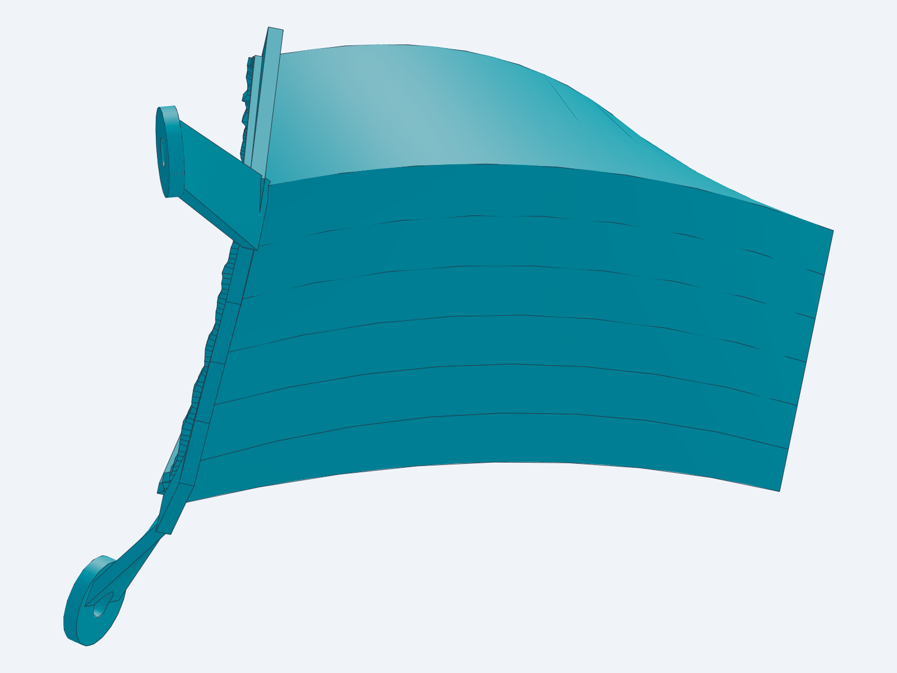

REFERENCE REVIEW / 01
Four routes.
One clear direction.
Pick the shapes and ideas worth keeping.
Tell me the number, your verdict, and the details you like.
OUR CURRENT WORK
Keep the existing V1 in view.
This is our rough Corolla concept, separate from the references above. The practical V1 model is complete for rough packaging review. Physical fit and cooling performance are not verified.
View assembly ↗ · Component GLB · Editable STEP